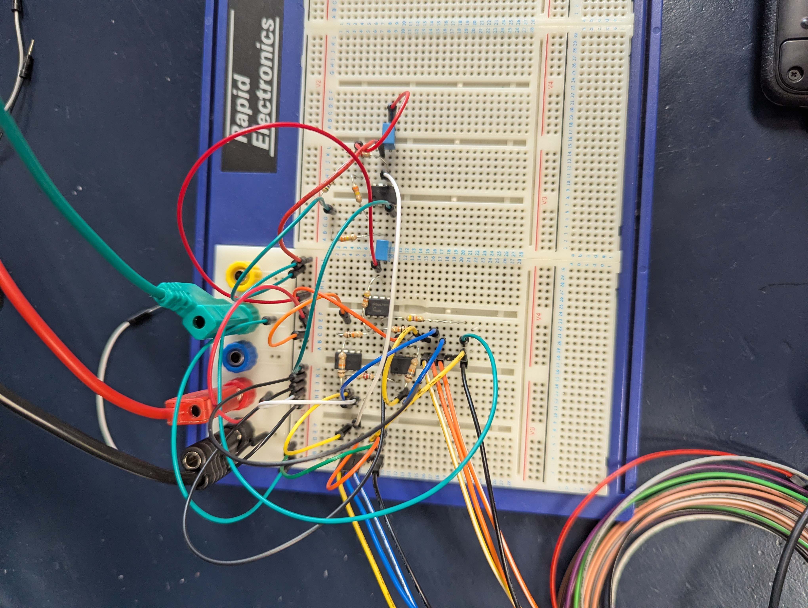
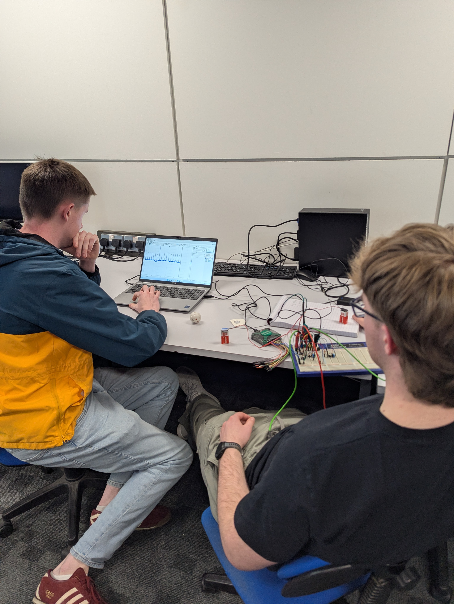
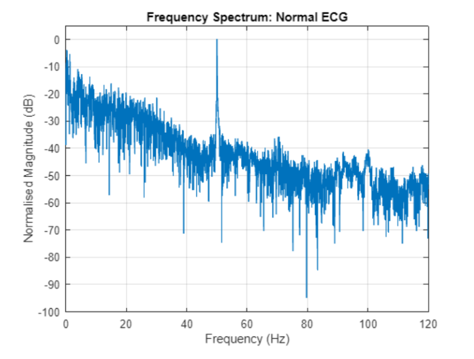
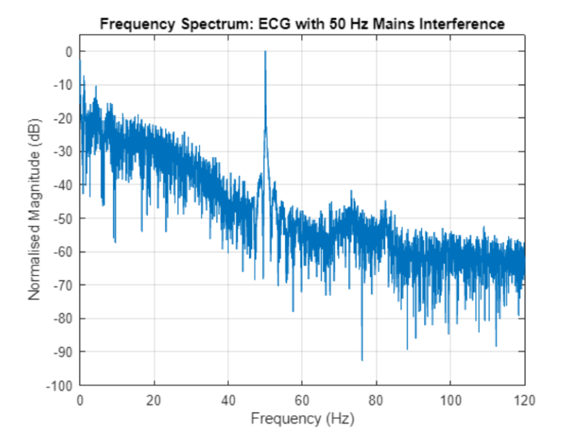
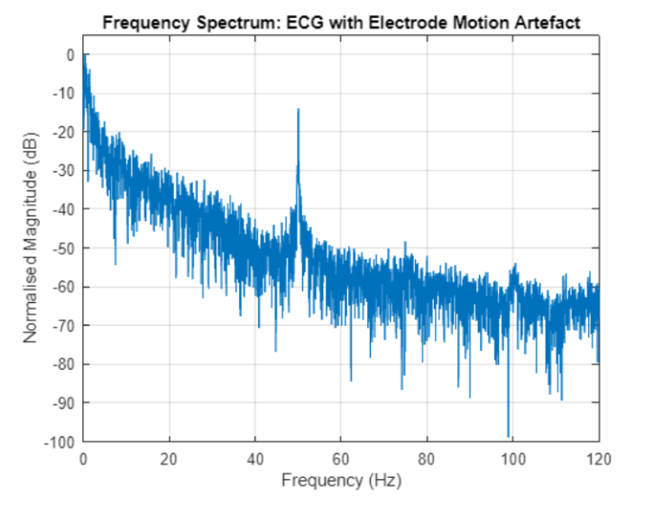
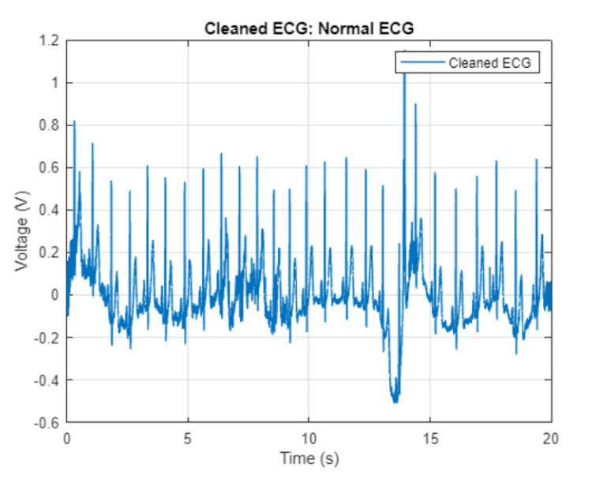

02 / Biomedical Electronics
Analogue ECG Acquisition & Signal Conditioning
Design, construction and experimental validation of a three-electrode analogue ECG acquisition circuit, followed by MATLAB analysis of recorded cardiac signals.
01
Overview
How can low-amplitude cardiac electrical activity be acquired and conditioned using analogue circuitry?
Electrocardiogram (ECG) signals measured at the skin are typically only a few millivolts in amplitude, making them susceptible to electrical interference, baseline drift and electrode-motion artefacts.
This project involved my design and construction of a three-electrode ECG acquisition circuit, combining instrumentation amplification with active band-pass filtering. The system was designed to provide an overall gain of 625 V/V across a target frequency range of 0.5–100 Hz.
Rather than immediately attempting physiological measurements, I progressively validated the circuit using known input signals. Following component value bench testing, the completed system was used to record cardiac activity, with the resulting data subsequently analysed and processed in MATLAB.
Design gain: 625 V/V
Target passband: 0.5–100 Hz
Measured mid-band gain: 640.7 V/V
ECG sampling frequency: 400 Hz
02
Engineering Approach
Instrumentation Amplification
Acquiring a differential signal
The first circuit stage used an instrumentation-amplifier configuration to amplify the small differential voltage measured between the ECG electrodes. Common-mode rejection was important for reducing unwanted electrical interference present at both inputs.
Signal Conditioning
Amplification & filtering
A subsequent active filtering stage provided additional amplification while restricting the frequency range of the acquired signal. The intended passband was approximately 0.5–100 Hz.
Accounting for physical component tolerances
Before experimental validation, the resistor and capacitor values were measured rather than assumed to equal their nominal ratings. These measurements were used to recalculate the expected performance of the constructed circuit.
Nominal design gain: 625 V/V
Predicted gain from measured components: 673.2 V/V
Calculated lower cutoff: 0.489 Hz
Calculated upper cutoff: 108.2 Hz
Circuit Construction
From circuit design to physical implementation
I assembled my ECG acquisition circuit on a simple breadboard using discrete components and operational amplifier stages.

03
Bench Validation
Testing against known input signals
The completed circuit was tested using controlled differential input signals, allowing the amplification and filtering behaviour to be assessed independently of the additional uncertainty introduced by physiological measurements.
Tests were carried out at 0.5 Hz, 1.1 Hz and 100 Hz to investigate the circuit response near its lower cutoff, within the passband and near its upper cutoff.
0.5 Hz — Measured gain: 489.0 V/V
1.1 Hz — Measured gain: 640.7 V/V
100 Hz — Measured gain: 511.0 V/V
The highest measured amplification occurred at 1.1 Hz, reaching 640.7 V/V. The response decreased towards both cutoff regions, consistent with the intended band-pass behaviour.
Comparing the original 625 V/V design target, the 673.2 V/V prediction based on measured components and the experimentally observed 640.7 V/V mid-band gain provided a useful illustration of the differences between nominal design, calculated physical behaviour and experimental performance.
04
ECG Acquisition
From test signals to a physiological recording
Following my bench validation, the circuit was powered using two 9 V batteries to isolate the acquisition circuit from the mains supply during physiological measurements.
Three disposable ECG electrodes were positioned in an approximate Lead-II configuration. The conditioned signal was acquired using a data acquisition system at a sampling frequency of 400 Hz.
The resulting waveform contained repeating, identifiable QRS complexes, demonstrating that the constructed circuit could acquire and amplify cardiac electrical activity.

05
Investigating Signal Interference
How does the acquired ECG respond to disturbance?
Once a normal ECG had been acquired, additional recordings were taken under deliberately disturbed conditions. These experiments were intended to investigate how common sources of interference affected the acquired signal.
Normal Recording
Baseline measurement
The normal recording contained periodic cardiac activity with identifiable QRS complexes, alongside some baseline variation and electrical noise.
Mains Interference
Electrical contamination
Deliberate exposure to a nearby mains source introduced additional 50Hz noise interference into the acquired waveform.
Electrode Motion
Movement artefacts
Mechanical disturbance of an electrode produced irregular low frequency fluctuations and baseline changes, demonstrating the sensitivity of the electrode-skin interface during physiological measurement.
ECG Acquisition Under Different Conditions
Following validation of the analogue circuit, ECG recordings were collected under three different conditions to investigate the effect of interference on signal quality. The raw recordings are shown below before any additional digital filtering.
Normal Recording
Baseline ECG acquisition
The initial recording showed repeating cardiac activity with identifiable QRS complexes, demonstrating that the circuit could acquire a physiological ECG signal. Some baseline variation and electrical noise remained present.

Electrical Interference
ECG affected by mains interference
A second recording was collected while deliberately introducing electrical interference. Comparing this waveform with the normal recording helped investigate how environmental noise can affect low-amplitude physiological measurements.

Movement Artefact
ECG affected by electrode movement
The third recording investigated the effect of disturbing an electrode during acquisition. Electrode movement introduced irregular fluctuations and baseline changes, illustrating another practical challenge in physiological signal measurement.

06
MATLAB Signal Analysis & Cleaning
Investigating noise in the frequency domain
The acquired ECG recordings were imported into MATLAB for further analysis. A Fast Fourier Transform (FFT) was used to examine the frequency content of the recordings and investigate the interference observed during experimental testing.
A component around 50 Hz was identified, consistent with electrical mains interference. Electrode movement also introduced substantial disturbance that was not confined to a single frequency.
Digital notch filtering
A 50 Hz IIR notch filter was implemented in MATLAB to attenuate mains interference. Zero-phase forward-backward filtering was used to avoid introducing phase distortion into the ECG waveform.
Following filtering, the repeating QRS complexes remained clearly identifiable. This provided a useful demonstration of how analogue signal conditioning and subsequent digital processing can be combined when working with low-amplitude physiological signals.

07
Results & Engineering Takeaways
Outcome
The completed analogue circuit successfully acquired a recognisable ECG waveform after first demonstrating the intended amplification and filtering behaviour under controlled bench testing.
The project also demonstrated the practical challenges involved in measuring physiological signals, including component tolerances, environmental electrical interference and electrode movement.
01 / Design vs Reality
Physical components are not ideal
Measured component values produced a different predicted gain from the original nominal design, reinforcing the importance of characterising physical components.
02 / Experimental Validation
Test before interpreting
Testing the circuit with known signals made it possible to evaluate its behaviour before introducing the additional uncertainty associated with physiological measurements.
03 / Biomedical Measurement
Real signals are rarely ideal
Electrical interference and electrode movement affected the acquired ECG, demonstrating why careful measurement setup and signal conditioning are essential in biomedical instrumentation.
What I Took From This Project
The most valuable takeaway I had from this pet project was trying the progression from theoretical circuit calculations to a physical build, controlled experimental testing and finally the acquisition of a real physiological signal. Although the design calculations provided a starting point, measured component tolerances, electrical interference and electrode behaviour meant that the real system did not behave exactly as an ideal schematic would predict which was fine, I knew it would be a little hard to get perfection with the components I had at hand.
Working through these differences though definitely emphasised the importance of how useful it was to build a system modularly, with step by step progression & validating my system against known inputs before relying on its final measurements.
I didn't have time to go through and refine my circuit or buy new compnents to try get a higher level of accuracy but this would definitely be a project I would love to come back to and build on, perhaps integrating further systems after I have aquired my heart rate over a set period of time.